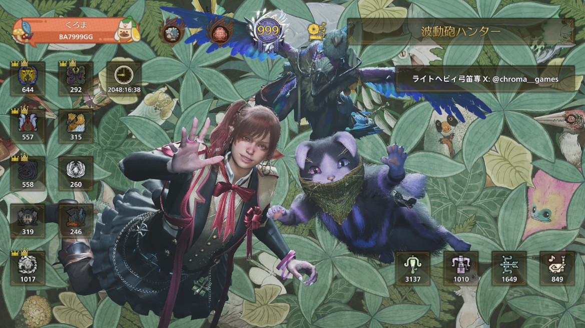

モンスターハンターワイルズを2000時間以上プレイしたので今更振り返りレビュー
2025年2月にモンスターハンターの最新作、「モンスターハンター ワイルズ」が今年4月になって最後のフリーチャレンジクエストも終わり、ワイルズとしては一段落しました。
今夏に有料拡張DLCの情報がある（いわゆるG級とかマスターランクとかいうもの）とのことで完全にワイルズシリーズはこれで終わりというわけではないですが、間が結構空いて一段落つくのでここいらで改めてワイルズの振り返りレビューなんかをしてみたいと思います。
参考までにボクのプレイ時間などなどはこの画像を見てもらうのがわかりやすいかなと… 
ゲームのプレイで2000時間超えです。はい、これを書くにあたって改めてプレイ時間を確認したんですが、1000時間くらいかな〜なんて思ってたらまさかの2000時間越えてました…正直ボク自身が一年間でこんなにプレイしていたのかと引いております…
{kind=link}
あと、何気にボクのYoutubeチャンネルでプレイ動画なんかも載せてます。やりこみ度とかプレイヤースキルはこれで判断していただければと
https://www.youtube.com/@%E3%81%8F%E3%82%8D%E3%81%BEgames
で、本文はすごい長くなってしまったので結論だけ箇条書きすると以下です。
- アクション面はモンハンシリーズ1面白いよ
- 学習曲線もモンハンシリーズ1考慮されていて、アクションゲー得意じゃない人でも階段を登るようにやっていけるよ
- ストーリーも良いよ
- グラフィックの良さもモンハンシリーズ1だよ（※PCの場合は環境による）
- リリース当時は重いだのクラッシュだのあったけど、今はかなり改善されて軽くなったよ
- 今後発売されるマスターランクDLCのスタートダッシュをしたいなら、今から始めるのが◎
とこんな感じです。
ボクはモンハンシリーズを3系、4系、World系、Rise系、XX以外は全部やってきていて(初代もセカジーもMHFも経験済み)、これらはそんなにやり込みまではしていなくてラスボス倒してある程度気に入った装備つくったら終わりみたいな感じ、MHFに至ってはサービス当初からプレイしていたんですが、あまりの辛さに途中でやめてしまっていて、言ってみれば「エンジョイ勢」だったんですが、ことワイルズに関してはHR999行くのはもちろんのことタイムアタックまで手を出したり結構なやり込みをしていて、この一年間多分ログインしない日は無いくらいに弩ハマりました。
ワイルズは重ね着装備の「竜人族の耳」がどうしても欲しかったのでプレミアムデラックスエディションを予約して買ったんですが、本当にお値段以上に遊び倒しました。
またリアルイベントである「モンスターハンターフェスタ」も今年初めて参加したりとか、なんかとにかくこれまでに無いくらいモンハン漬けな一年でした。
SNSではご存知の通り「ワイルズ」といえばなんか人の噂に乗せられて「なんかだめらしいぞ」と言ってるだけの人や、実際プレイいないのに噂のみでSNSでネガキャンをしている人とか居たりはしました。
とはいえ、ネガティブポイントが無いのか？と言われるとそりゃこれだけやり込めばそれなりにはあったり最適化の問題は以前あったわけですけど、そもそもどんなAAAタイトルでも不満点は多少有るでしょ？ということで、ボクはお値段以上に楽しめたしマスターランクDLCも今から楽しみですし、結局SNSやらネットの反応集動画を真に受けたらだめ真実は自分自身て体験しないとわからないということです。
なので、ボクのこれから書くレビューも参考程度にしていたければ幸いです。
よかったところ
プレイしていてあれはよかったなと思う部分を細かく書き出してみたいと思います
下位のストーリーと没入感
下位ストーリーやってるときは寝る間も惜しいくらいにもう本当に「これが令和の最新技術で作られたモンハンか！」と感嘆しながらプレイしていました。
緋の森の生命を感じる雄大さ、油涌き谷に点在するなんか鉄筋コンクリートの残骸みたいなブロック、竜都の廃道（氷霧と竜都の跡形をつなぐ、崩壊した竜都の建物の間を通る道）とかゲーム外の作り込みがすごいなぁと…
あと、ワイルズでは久しぶりにモンハンをプレイしたのですが（とはいえオープンベータはプレイ済み）、下位ストーリーではモンスターが強くて詰まるみたいなことは一切なくてサクサクプレイできたというのも大きいかなぁと思いました。
ボクが初めて詰まったのは忘れもしない上位の「ジン・ダハド」ですね。ここは確か3回目のトライでクリアできてあとは上位クリアまでノー詰まりでした。
これは多分ですが没入感を削ぐことはしないということで意図的に難易度をかなり下げていたのかなぁという感じがして、今までのモンハンシリーズだと上位の最後らへんはかなり難しかったように思えるんですが、ワイルズにはそれが無かったよなぁと感じた部分ではありました。
（上位クリア後の話にはなりますが初期は任務クエストにオメガやゴグマジオスが居なかったためこういう判断ですが、今から始める人はオメガとかで詰まる可能性はあるかもなぁというのは多少あります…）
過去作と比べて慣れていない人への配慮ができている
初めての人、プレイ時間が少な目という人たちにも今回のモンハンは配慮がされているなぁというのは随所に感じていて、最後までフリーチャレンジクエストのSランク取得のための狩猟時間がそこまで厳しくなかったこと(Sランクを取得するとチャームという特別な飾り：ステータスには全く影響なしが貰える)、装備のスキルは防御系が積みやすくなっていて1スロットスキルに有用なものが多くなっていること（反対に火力方面は一方が建てばもう一方立たずの絶妙な感じになっている）、サポートハンターもそれなりに強い（オメガやゴグマジオスは手強いのでやり込み勢であっても最初はサポートハンターが役に立った人も多いハズ）といろいろと配慮されている感じはありました。
総じて本作は「アクションゲームが苦手な人を置いてけぼりにしない」という精神すら感じました。
多分このあたりを配慮できていないと「1000万本の売上を超えることはできない」という感じなんだろうと思います
あと今だと「あぁ〜、こういうことだったのかな？」と気がついたことがあって、モンハンは最初から全部入りではなくて季節ごとのアップデートで機能追加・開放という感じなので、これをうまく使って先行やり込み勢とあまりやり込まない人との差が出にくいように調整していたんじゃないかなと。
例えば護石がそれに該当していて、秋に実装予定だったのがテコ入れとして前倒しで夏に実装されたという経緯があるんですが、その後冬のタイトルアップデートも終わり今年の★10でレア度の高い護石が出やすい「古びたお守り」が実装されるという感じでした。
この「古びたお守り」が実装される前まではレア度の高いお守りがでることなんて文字通りかなりレア、ましてや有用なスキルが無駄なくついたお守りなんて本当にレアで、やり込んでいてもなかなな出るものじゃないという状況でしたが「古びたお守り」が実装されるやいなや結構レア度が高い護石が出るので、これは一種の先行やりこみ勢に対するストッパーとして働いていたのではと
まぁ人はそんなにやり込んでいなくても、やり込んでいて良いものをゲットしている人を見て羨ましく思ってしまいその結果萎える…というのもあるわけで、そういう方に配慮した可能性もなくはないなと思いました。
消耗品アイテムの集めやすさ
過去作にも農場とかがあって初代の頃と比べるとかなりマシにはなっています
本作はそれに比べてアップデートによって段階的に素材の入手ルートが増えており（七色のカバネクエストとか、卵納品とか、食品配布で時々食材やチケットが手に入るとか、タルコロで滋養エキスが集めやすくなったとか）、この辺も過去作と比べて相当緩和されている感じがあります
ボクが「次のマスターランクDLCでスタートダッシュをしたい人は今からワイルズをやると良いですよ〜」と言ってるのは、まさにこのあたりがリリース時に比べて格段に良くなっていてHR上げくらいなら効率的に100は突破できるという意味合いもあります
最適化を諦めなかった
リリース当初はSteam版は最適化不足といいますか（Steamのレビューなどを見ていますと、最適化不足の指摘は日本よりも海外のほうがかなり多かったと思います）、リッチな表現の代償として結構重いゲームになってしまってギリギリな環境だとクラッシュとかは実際にあったわけですが、これを冬のタイトルアップデートとそれに続く毎月のアップデートで本当に劇的に改善してきたことですね
ボクもPCでプレイしていてRTX4080、CPUもそれなりに強め、メモリは64GBということで流石にこれだけスペックがあるとリリース当時でも重たくは感じなかったのですが、当時一番人口が多いRTX3060や4060ではそれなりに重かった＆なんとかFHD60FPS出そうとして、設定をパフォーマンス設定にしてグラフィック表現を落とすとグラフィックが極端に汚くなっていたとかあったそうで、このあたりを冬のアップデートできっちり改善できていた(パフォーマンスよりの設定にしても汚くはなくなった)というのはもはや執念めいたものというかそういうのを感じました。
これは完全に憶測ですが、C社は「PCの性能は今後も右肩上がりだろうからこれくらいリッチな表現をしても大丈夫」というのが開発当初あったんじゃないかなぁと。
残念ながら現状はPCの進化が確実に鈍化してきていて、おまけにワイルズが発売されようとする2025年初頭は思い返せばAIブームによってGPUが割高＆世代交代による品薄のダブルパンチになっていて、PC環境の更新がしづらい時期でもありました。
結果論ですがこの時期はPC環境の更新が難しい感じだったので、リリース時に「RTX3060クラスでクオリティ設定でもFHD60FPS維持できる」を目標にしたグラフィックのリッチ度にしていたら没入感はそりゃ下がるしデザイナーが表現したかったワイルズではなくなるかもしれないけど、ここまで最適化不足を言われて初期に評価を落とすことはなかったよなぁ惜しかったなぁと思うわけでして…
そんな感じでPCゲーマーはC社が想定していたほどGPUや環境を更新せず昔の環境を使ったままで、その後は言わずもがな2026年なんてRAMやSSDがむちゃくちゃ値上がり、なんもかんも値上がりの時代に突入して、まともなゲーミングPCなんて高嶺の花過ぎて目も当てられない状況となってしまった不幸というのはかなりあるかなと……
(PCないけどワイルズやりたいって人は今だったらPS5日本語エディションか、PS5Proを買うのが絶対におすすめですはい)
あと、最適化問題が取り沙汰されるときに対策ができずに冬になってしまったのは、2025年〜2026年初頭にかけてはカプコン社のもう一本の大黒柱である「バイオハザード」の新作発売があったことでそちらはコケることが絶対に許されないわけで、バイオハザードのゲームエンジンの調整がある程度終わった段階でワイルズの最適化が行われたのかなぁと妄想しております。
（どんな開発会社でもそうですがエンジンのコアに近い部分を触れる人なんて極少数で、限られているものなのです）
別の話として、ワイルズ初期はRTX3070でGPU温度が100度行ったっていうあるYoutuberの振り返りレビューをみたんですが、そもそも論としてGPUで100度行ってしまうのはそのGPU、ビデオボードの冷却が足りていない（本来ならGPUを100％フル回転させていても80度付近で収めなければならない）ので、それはビデオボードのGPUの上に付いてるグリスがカピカピになってしまってるか、サーマルパッドの油が抜けている状態でVRAMの冷却がうまく機能していないか、ケースの冷却フローがおかしいかという感じで、一般的に半導体製品は80度以上で使い続けるのは寿命が加速度的に縮むので、今後そのまま使い続けるのは非常に大変まずい状態です。
（こうなってしまったらビデオボードを売って新しいのを買うか、もしくは分解してGPUにグリスを塗り直し、VRAMに新しいサーマルパッドを貼り直すといった処置が必要です）
CPU関連でも某配信者さんが似たような地雷を踏んづけてえらい騒ぎにもなりましたね。
これはこれでCPUの冷却が足りていなかった＝Intel13世代のいわくつきのKシリーズで過負荷掛け続けるまじで壊れるやつだったという感じで、この原因としては最終的にある常駐ソフトが悪さをしていてファンの回転がおかしくなって冷却できていなかった…という不幸に不幸がかなさった事例だったんですけどね…
他はアプデのたびに「シェーダーキャッシュをきっちり手動でクリアしないといけない」とか、まあこういうPC全般とPCゲームに深い知識がないと正しい対処が難しい＝正当な評価が得られないってのもあったりして、PCゲーマーが誰もが知識を持っているかといえば決してそうではなく、人によっては「PCでゲームをするのはPCに関するそれなりの知識が必要」という前提条件をあまり深く考えずにBTOメーカーに載せられてゲーミングPCを買った人も多いと思うので、総じてPCゲーム開発者はゲームを作る上でギリギリのスペックを狙ってはいけないということだったのですが、まぁこの辺はどこかのメジャーなゲームメーカーがこの地雷を踏み抜かないとユーザのPC環境が強くならない＝PCゲームの進化が止まったままってなことになるので、CAPCOMさんが今回チャレンジすぎてこの地雷を踏み抜いてしまったのはある意味仕方のなかったことなのかなという思いです。
本来はゲームのパッケージ自体はすでに売っており売上が立っているので会社の経営からしてみたら無料のアップデートでここまで最適化をする道理も義務もないわけですが、やっぱり「モンスターハンター」というカプコンにとっての大事な一柱を折るわけにはいかない！ということで、なんとかしたのかなぁと思いますということでなんとかしたのは偉いなぁと
狩りの楽しさ
アクション面は言うまでもなく多分過去一番で、モンスターを狩るという楽しさも過去一番かなぁと思います
モンハンは武器種だけでも14武器もあり似たような操作体系もあれば、全然違う操作体系な武器も合って、武器によっては別ゲーみたいな操作感になるというのがモンスターハンターの味だとは思っていまして、本作にもそれは継承されていてそこは一つで二度美味しい部分がありますね。
過去作では闘技場でしか手に入らない装備とか結構あったため一応全部の武器は使えはするんですが、ワイルズの最初は過去作から慣れ親しんでいる弓だけ使って下位と上位はクリアしました
で、歴戦王レダウあたりでワイルズのライトボウガンとヘビィボウガンはどうなんじゃろFPSみたいって聴いたけど…って思って使い始めたらおっやっぱ楽しいなぁと感じて使い続け、オメガ戦でサポート役が居ないと困ったことになったので狩猟笛も学んでみて実戦すると、しっかりサポートもできてなんか昔MMOでサポート役をやってた時期を思い出してこれはこれでなかなか楽しい…と増えてそれぞれの武器を使うのはやっぱり楽しいので、このへんは本当にモンハンの味であって随一だなぁと。
※：ただライトボウガンの速射ゲージはなくてもよかったなと…まぁこれは最終アップデートでやっと溜まりやすくはなったんですが…
それに加えてハンターのアクション(特殊行動)やモーションの強さ、過去作にはなかった集中モードでの傷破壊など緩急あって良いなぁと思いました。
身躱しなんかのアクションはMHXの時代だとわざわざNPCから「狩技」として伝授してもらわないと使えなかったり、セット数が限られたりするわけですが、本作は弓や双剣を装備したら最初から身躱しが使えるとか最初から相殺が使えるとか、過去一ハンターが強いんじゃないかという感じでこの辺は時代というか爽快感を重視した結果なのかなぁと思いました。
看板モンスター（アルシュベルド）が神モンス
今作の看板モンスターはアルシュベルドというモンスターでした
アルシュベルドは頭と大きく前にある鎖が弱点、更に小賢しいことをせずに堂々と戦ってくれる、モーションも強くて「報酬抜きにしても戦っていて楽しい」というモンハン史上においてもかなり稀に見る良モンスでした。
思い返せば初代の看板モンスターの「リオレウス」ですが、ワールドツアーと揶揄されるように空飛んだままなかなか降りてこないとか、他のモンハンシリーズだと看板の肉質が渋いしぶすぎるとか、モンハンシリーズの看板モンスターはなんか残念な部分を少なからず内包していただけに、それがアルシュベルドにはまったく感じないというのがそうそうこういうのでいいんだよこういうので本当によく考えて造ったんだなぁと…
最終アップデートでアルシュベルドの強化版である「歴戦王アルシュベルド」も実装されたわけですが、このモンスもしっかりと強くてエンドコンテンツを極めて装備固めてるやり込み勢でも気を抜いたら乙（HP無くなってテント行き）されてしまうくらいにはしっかり強い＆戦って楽しい相手だったのでこれは本当に良かったという気持ちです
歴戦王アルシュベルドが来る前は結構順当に強い「オメガ」というFF14のコラボモンスターが秋に実装されておりまして、オメガの報酬はぶっちゃけそんなに美味しくはないんですが腕に覚えのあるやりこみ勢はこぞってオメガ（零式）をやり込んでいただけに、「コラボじゃなくてワイルズのモンスターで零式オメガくらいやりがいのあるモンハンのモンスターが実装されないのはちょっとねぇ」みたいな声もちらほらありましたが、歴戦王アルシュベルドはそれにしっかりと応えてくれました
参加型配信を企画されたYoutuberさんの存在
これは良かったことに含めるかどうか微妙な部分ではありますが、今やYoutube全盛期、モンハン実況というカテゴリーというか生態系といいますかそういうのが確立されていて割と登録者数が多い方もいらっしゃいます。
そしてそういった方が攻略情報はもとより、「参加型の配信」をされているというのが非常に良くて、友達や周りの人が同じワイルズをプレイしていない、ロビーはあるけど会話に入れない、そもそも野良ロビーでは誰も会話していなくて寂しい思いをしていてもそういった「参加型の配信」に参加することによって寂しい思いをしなくても楽しくマルチプレイができる環境になったというのが非常に大きいと思いました
(なのでC社はもっと配信者を大事にせよ)
また、参加型の配信をされている方には「チャレンジクエストを皆でSランク取得しよう」とか「零式オメガとか強いモンスターを皆で倒そう」みたいな救済企画をされている方もいて、「下手だしでもSランク取りたいし◎◎のモンスターをソロじゃ倒せないしどうしよう」みたいに悩んでいる人への寄り添いになったのも大きいです。
ボクも参加型の配信をされている配信者の方がいらっしゃらなかったらもしかしたら今までワイルズを続けてプレイしていなかったかもしれないし、この生態系はもはやモンハンの継続プレイには欠かせないとさえ思いはしました。配信者の皆様にはこの場をかりて厚く御礼申し上げます。
今なお、今後ここは直してほしいなと思ったところ
タイトルアップデートが来るまでは直してほしいところはそれなりにあったわけですが、最終アップデートが終わって一段落ついた今は色んな面がかなり改善されて良くはなりました
ただ、まだ甘いなぁと思う部分は当然にしてあります。
あと余談ですが、モンハンでは伝統的に実験要素やチャレンジ要素を初期にあれこれ実装をして、これらがあまりにも不評だと次のマスターランクDLC（G級）ではバッサリと切って無かった扱いにされるというのがあります。モンハンはこうやってユーザの意見のフィードバックをやりつつ最終アップデートの頃には完成形に近づくと行った具合にライブ感があったりします
例を上げますとライズで「百竜夜行」というコンテンツ（いわゆるタワーディフェンスのような要素）があったのですが、まぁ色んな理由で不評だったので大型拡張DLCのサンブレイクではそれがごっそり無かったことにされていたとかありました。
オープンワールド(シームレスマップ)が活かしきれていない
今作は一応シームレスマップになっていて、World系と同じくモンスターもそこいらに点在するようになっておりオープンワールド感はあるのですが、これは活かしきれていない感じが拭えません
一つにはハンターが持っている「便利すぎるマップ」があるが故にどこにモンスターが居るのかひと目でわかるようになっていて、しかもある程度何をゲット出来るかもわかり、挙句ここから直接クエスト化できるようにもなっていて、これはこれで便利といえば便利なのですがここまでやってしまうとオープンワールドである意味が薄れるよなあという感じはしなくもないです
もしかしたらモンスターハンターとオープンワールドは「クエストを貼って受注する」みたいなモンスターハンターの伝統というか仕様にそぐわないのかもしれないし、かといっていちいちモンスターをフィールドから探すというのも今の可処分時間が限られている世の中で受けいられるかどうか厳しい部分でもあって、ある種二律背反してしまう要素をうまく解決する画期的手法はもしかしたら無いのかもしれません…
ゴグマジオスのDPSチェックは必要なかったのでは
ゴグマジオスは2ステージ目で抑制できないと回避不能大技でキャンプ送りという仕様があります抑制は龍属性の攻撃がある程度入るとOKという、ある種のDPSチェックみたいになっていて、これが★9ならまだなんとかなるんですが★10になってくるとごく一部の武器種以外は抑制がほぼ無理…という感じになっています
よって★10を無理やりクリアするには大技前に戻り玉とかでキャンプに自ら戻ってそれを繰り返してなんとかクリア出来るという感じです。
一応オメガにもDPSチェックがあるのですがオメガはFF14のコラボモンスターであって、FF14にはDPSチェックが存在しているのでギリギリ許されてはいたのですが、ゴグマジオスはモンハンのモンスターなのであからさまなDPSチェックを要求するのはどうなんだろうなぁという感じではあります。
一応★10ゴグマジオスをクリアしても報酬は大したことはなくてネームプレートが貰えるだけなので無理してクリアする必要はないんですが、このDPSチェックがあるせいで★9のゴグマジオス含めたゴグマジオス自体の狩りは面白くなくてなんか作業感強いなぁというのが現状です。
マイハウスが無かったこと
今回はハンターが禁足地に向かうということで、テント暮らしなのでマイハウスなんて無いだろうと言われればそうなんですが、やっぱりマイハウス機能は欲しかったなぁと。
モンハンワールドにはこのマイハウス機能があって、環境生物なんかを飾れたりしたそうですが、ワイルズは環境生物が豊富にあってあれだけ力を入れていたにも関わらず飾れないというのはもったいないというか残念ですね。
モンハンは狩りだけじゃなくてそういう楽しみ方をしている人も居ると思うので…ここは次の大型有料DLCではやはり実装してほしいなぁと思います。
あと技術的にむずかしいかもですが、大集会所から各々のマイハウスに行けて複数人入れるとかだともっと良いですね
UIについて
リリース当初からUIはあまり手触り良くなかったのですが、色々指摘が合ってUIにも色々改善が入っている今でも直感的ではない部分があって、もうちょっとどうにかならなかったのかなと思う部分はあります
一応フォローすると初代モンハンはアイテムボックスの整理機能がそもそもなくて、自力で整理しないとだめとか、今では当たり前の「装備やアイテムのマイセット」が過去作は無かったとかC社というかモンハンチームはUIを作るのが下手というのは伝統的にあります。
それを比べると一応改善はしてきているのですが、今やソシャゲ全盛期、これらの快適で気の利いたUIになれきったユーザーから見るとまだまだ足りないという思いはあります
一つ気がついたことがあって、Steam版でマウスキーボードで操作するとあのUIも思ったほど悪くなくて、これはマウスキーボード前提で設計されてしまっており（或いはタッチパネル前提）、コントローラーでのUI操作の煮詰め方がちょっと足りなかったのではという感じはあります。
トレーニングモードに関して
トレモに関しては色々機能が足りないといいますか、新しく触る武器種の動作確認用にしかならないなぁといった感じで「トレーニングモード」としては色々足りないなぁと
同じカプコンのSF6のトレモは好評なのにどうしてモンハンは…みたいなところが正直あります
たとえばタルパンチャー（相手）が叩きつけと子タル投げの行動しかしなくてなぎ払いの行動をしないので回避の実践的な練習がしづらいとか、ソロでしか無理で、例えばフレンドにやり方を教えようにも教えづらいとか、ここの昼夜が砂原と連動してしまっているので見づらい部分があるとか…
実装するのはだいぶ難しいと思いますが、大集会所に大人数でトレーニングできるような場所があればモンハンらしくて良かったんでは？みたいに思いました
訓練所が無かったことと導線不足
本作は一応主人公ハンターが熟練っぽいハンターだったために設定として訓練するようなレベルではないのと、ユーザの時間もないだろうしサブクエで軽くすませばよいかみたいな感じで過去作にあった訓練所が無くなっていた＆闘技場はある程度勧めて大集会所を開放してから＆その闘技場も戦える相手が少ない…とかでこの辺はちょっとうーん残念といった感じでした
確かに我々過去作からずっとモンハンをプレイしている、またはちょっとでもモンハンというコンテンツ（本家アクションじゃなくてNowとかストーリーズとかでも）を触ったことのある人にとっては「アイテムの効果とか知ってるから今更昔にあった訓練所なんて必要ない」っていう意見もあるかと思いますが、今作でモンハンというコンテンツを初めて触る人にとっては何もわからんわけで…回復薬は？スタミナは？スキルは？？どうしたらいいの？とか、ゲーム内だけでは完結できず…結局Youtuberさんの動画やら攻略サイトを見ないとだめでそこでようやく知るみたいなことが往々にしてあるわけでして、色々とっつきづらかったのではと…
そういえばボクが初代やってた頃は、基礎の基礎を学ぶ訓練所がありまして、ここは結構なボリュームがありましたし（まぁこの訓練所は後のモンハンシリーズでなんか難しくなったり色々あるわけですが）★1〜2のクエストなんて本当に基礎的なことを学ぶという感じだったので（あと村長がクエスト中にいちいち語りかけてたりしてた）、ここはモンハンシリーズ経験者が無駄だから要らないと思ってしまうようなコンテンツも丁寧に実装する必要があったのではと…
エンドコンテンツについて
護石についてはやっぱりこれだよねみたいな思いはあって護石はなんの文句もないのですが、もう一個のエンドコンテンツ、例の「巨戟アーティアのスキル抽選」についてはどうにかならなかったのかなと
パーツをもってきて武器屋（ジェマさん）の前で延々とガチャを引かせるのは何かちょっと違うかなぁと
しかも手間がかかるのでまとめてガチャをすると「一時間」とか余裕でかかります
こういった行為を「厳選」とか言うんですが、こんな仕様なので厳選があまり好きじゃないという人も一定数居ます
この辺は4系であった狩りで一発ランダム武器がで出てくる「発掘武器」のほうがよかったんではと思いました。
チャレンジクエストとフリーチャレンジクエストについて
具体的には大集会所入口で見ることが出来る「ランキングボード」ですね。
あれは必要ない＆もしくはサークル内やフレンド内でのみの順位にとどめて、グローバルなランキングボードは必要なかったと思います。
なんでこんなこと書いているのかというと、当初チャレンジクエストやフリーチャレンジクエストで今Sランクで配布されているチャームは本来はグローバルのランキングボードで10000位以内（100位だったか忘れた）に入らないともらえないとかそういう仕様でした。
しかしチートによって上位が独占されてしまって当時カプコンは対処できず大問題になり、最終的にSランクを取った人は全員配布というふうにこの企画を考えた人の面目を潰された挙句仕様変更となり、落ち着いたという経緯がありました。
ただ、チートを防ぐには相当な労力が必要であることはわかっています。
しかしながら、チートへの対応が困難、仮にチートを見つけたとしてアカウントごとBANとか厳正な対応ができないというのであれば、最低限の対応としてそれをユーザーの目につきにくくするといった配慮は必要ではなかったのかと。
このような感じでグローバルなランキングボードを置いているとどうしても明らかにチートしている人ってのは目についてしまうので、対処ができない、または甘い対処で済ませてしまうんであれば、グローバルなランキングボードはもう実装しないなど、そういった配慮はあって然るべきと思います。
後フリーチャレンジクエストで思い出しましたが、最後のフリーチャレンジクエストの「歴戦王アルシュベルド」で、ライトボウガンの滅龍弾火事場ハメが有効だったのもボクとしては遺恨が残るかなりの残念ポイントだったかなと
実際やってみるとこのハメ自体はそうそう誰でも出来るものではなく滅龍のリロードの前に簡単ではない特殊操作が必要とか特殊な修練が必要ですし、なんか罠仕掛ける時もジェスチャーとか入れてキャンセルを入れないとアルシュに動かれて叩かれるのでうまくいかないとか…そういう別の大変さがあるのでなかなか苦労はするのですが、ただユーザー間で競い合う「ランキングボード」があって「ランク」がある以上「競技」の部分があり競技と言うからにはある程度武器間の公平さをできるだけ取れるように重要視すべきだったのでは？と思います
こういったハメるルートが事前にわかっている、しかもそれに関する対処はしないっていうのは「競技」という文脈においてどうなのかな、フリーチャレンジクエストはe-Sportsにあるような「公平な競技」にはしなくて、あくまでカジュアルな感じで「競技していますよ〜」的な雰囲気のみにしたかったのか…意図というか持っていきかたが分からなくなってしまった部分ではありました。
（なにも対処しなかった点について歴戦王アルシュベルドのフリチャレは最後のフリチャレであるにも関わらず、詰めずに適当に終わろうかなと萎えた人もまぁ居たように思います）
で、勘違いしてほしくないのが、ボクは別に「ハメて狩る」行為は否定していないし、このルートを使ってフリチャレやった人の苦労は認めているので否定はしていないです。
普段の狩りは別にハメ狩りしても好きにしたら良いし、それが仕様か見落としか開発者自信の落ち度で残ってしまっているのを利用するのは悪くないと思っていますが、ことフリーチャレンジクエストは「競技」の部分が多分にあると思っているので、その「競技」に関して「ハメて狩る」ルートが残ったまま実施してしまっているのはどういうことなのかということで、いやいやこれは開催前に何らかの形で塞いだほうが良かったんでは？と疑問を投げかけてみたいということです。
あとフリーチャレンジクエスト自体を否定しているわけではなく、これはこれで自分で自由に装備を決められる競技というのは面白い試みではあるのです。順位表を備えた競技として楽しむには少々足りないところがありますよと言っているのです。
なんといいますか、モンハンはそもそもFPS40で貫通弓の弱点Hit数が伸びるとか、FPS60以上でボウガンの回転がよくなるとか、他にもクエスト開始時に毎回数秒の違いがあるとかあって、そもそも論として厳密に公平な競技には向いていないですよねってのはあるんですが（First Person ShooterでもFPSが早いほうが有利とかゲームによってはあるんですが…というか条件を完全に揃えられる狩王決定戦以外、公平な競技は無理な気はする…）、平たく言うとチャレンジクエスト及びフリーチャレンジクエストの企画自体の詰めが甘すぎて、フリーチャレンジクエストに至っては当初考えていたチャーム配布の仕様を変更せざるを得ない状況に追い込まれてしまったわけですし、モンハンを「e-Sports」にまで昇華したいのか一体何をどうしたかったのか、またはしたいのか？と思う部分ではあります。
チートへの対処の甘さ
PvE（プレイヤー対モンスター）な側面が大きいモンスターハンタはPvP（対人）ではないのでそこまで目くじらを立てても…という意見はあるのですが、先程も述べたとおりチャレンジクエストやフリーチャレンジクエストを公式で実装してあまつさえランキングボードをも実装しで順位を競わせるみたいなことになってしまった以上、これは間接的に実質PvPであって、PvPなネットゲームにおいてチートに甘いなんてのは言語道断で、到底ありえないので厳正な対処をしないといけない話です。
本来ならばチートはアカウントごと一発でBAN、チーターはゲームから即刻排除されて然るべきですが、違反者はランキングボードからの一時的な排除＆しばらくプレイできないという感じになっているようでこれは対処が甘すぎるのではと…
あと処罰したなら処罰者のリストを公式Xなんかに掲載すべきではあります
(そういう処罰をしているMOBAはけっこうありますし)
ボクはゲームプログラマではありませんが、Windowsアプリのプログラマではあるので現実問題チートの対処はかなり難しいことは理解しております。
かつてはMicrosoftもWindows10のアップデートでOSに公式にゲームのアンチチート機能を入れていた(TruePlay)のですが、OBSとの互換性に問題があったりその他いろんな問題のほうが大きくなって後のWindowsUpdateでやめてしまって、そんなものは無かったことにされたというのもあります。
(Windowsにはセキュアブートの概念もあるので本来はWindowsがアンチチートというかチートできないようにある程度対応すべきなのですが…)
有名なアンチチートのパッケージはOBSのゲームキャプチャーを検出してしまうので、これは正常だよと意図的に検出から外しているという話もあったりします
（このゲームキャプチャーなんですが、手法がDLL注入というあまり行儀の良い方法ではないので、各アンチチートはOBSのDLLの電子署名まで見て検出の除外をしているそうです）
ゲームとチートの戦いの歴史はわかりやすい動画があるのでこれを見ていただければと思います。
何故許してはだめなのか、何故チートはだめなのかもわかりやすく解説されています
【許すな】チートがゲームを壊した歴史とチーターを許してはいけない理由を解説
https://youtu.be/OBdbXslxC38?si=07hVMCvKlElJkcTn
今回ワイルズで間接的なPvP要素が出てしまった以上、ValorantのVanguardのような徹底した対策はある程度必要かと思います。
(とはいえVanguardを開発実装するのには並々ならぬ苦労があったと開発者が答えていたのを見たことがあります。ツール開発コミュニティに潜入して偵察していたりもしたそうです。この記事を読むとここまでやっているのかと感心します https://gigazine.net/news/20250508-anti-cheat-tool-riot-games/ )
そこまでできない…っていうのであればそれこそランキングボードを実装しない、怪しいクエストが貼られてもサーバ側で弾くといった処理（これは後のアップデートで対応され、今やイベントクエストのほうが美味しいため意味が無くなった）が必要ではとは思います
おわりに
長かったですがここまで読んでいただきありがとうございます
色々厳しいことも書きましたが結局ボクはリリース時からずっとやってきて色々思いながら2000時間以上プレイして、アップデートで段階的に本当に良くなったし、ユーザの意見も結構聞いてはくれているという感触はあったので、それも加味し今年後半か来年辺りに出てくるであろう「ワイルズの大型有料マスターランクDLC」を期待して買うとは思います。
また、そういう人間のレビューであるのでそれを踏まえて参考にしていだだければと思います
最後に「モンハンうまくなりたいけどどうすれば」みたいなのをSNSで見かけることが多々あります
僭越ながらボクからの簡単なアドバイスは
- モンハンはジャンケンなので、繰り返し狩ればハンター側有利の後出しジャンケンになるのを理解する
- マルチで狩るのは面白いけど、上達するならソロ（＋オトモのみ）を頑張り、モンスターへの対処を繰り返し学ぶこと
- スキルの意味と効用を知り、理解すること
だと思います。この三点を念頭に置けば自ずといろんな答えはでてくるかと…
とりあえず最後のフリーチャレンジクエストも終わり、夏になるまでいつ大型DLCが発売されるかも分からないので、モンハンワイルズをプレイする時間は減ると思いますが、それまでは消耗品を貯めたりやり残しを消化したり、気が向いたらサブキャラで一から遊び直すとかしようかなと思っております